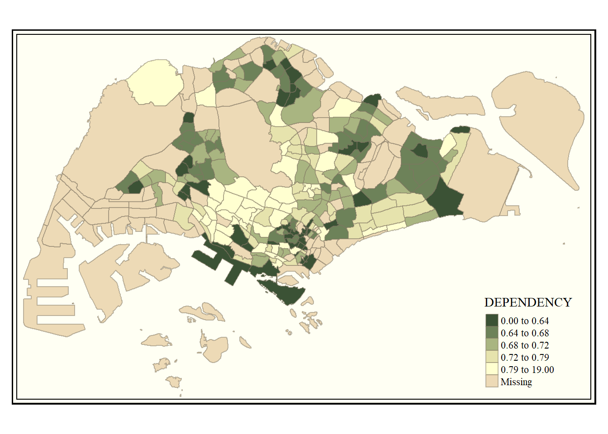
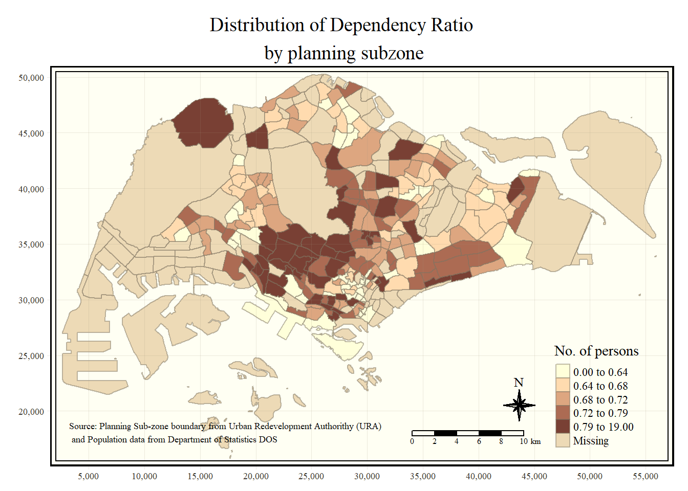

pacman::p_load(tidyverse, sf, tmap)Hands-On Exercise 01
Data Sources
(saved under ‘data’ folder)
From data.gov.sg:
- Master Plan 2014 Subzone Boundary (Web) (SHP)
- Master Plan 2014 Subzone Boundary (Web) (KML)
- Pre-Schools Location (KML)
Others:
Cycling Path from LTADataMall
Listings from Airbnb (listings.csv)
Singapore Residents by Planning Area / Subzone, Age Group, Sex and Type of Dwelling from Singstat
Chapter 1: Geospatial Data Science with R
1.1 Setting Up
1.1.1 Loading the R packages
1.1.2 Importing Datasets
# Load MP14_SUBSONZE_WEB_PL
mpsz = st_read(dsn = "data/MasterPlan2014SubzoneBoundaryWebSHP", layer = "MP14_SUBZONE_WEB_PL") # Multipolygon FeaturesReading layer `MP14_SUBZONE_WEB_PL' from data source
`C:\Users\Henry\Desktop\SMU Masters\2024-2025 T1\Geospatial Analytics & Applications\Project\GeospatialWebsite\Hands-On_Ex\Hands-On_Ex_01\data\MasterPlan2014SubzoneBoundaryWebSHP'
using driver `ESRI Shapefile'
Simple feature collection with 323 features and 15 fields
Geometry type: MULTIPOLYGON
Dimension: XY
Bounding box: xmin: 2667.538 ymin: 15748.72 xmax: 56396.44 ymax: 50256.33
Projected CRS: SVY21# Load Cycling Path
cyclingpath = st_read(dsn = "data/CyclingPath_Jul2024", layer = "CyclingPathGazette") # Multilinestring FeatureReading layer `CyclingPathGazette' from data source
`C:\Users\Henry\Desktop\SMU Masters\2024-2025 T1\Geospatial Analytics & Applications\Project\GeospatialWebsite\Hands-On_Ex\Hands-On_Ex_01\data\CyclingPath_Jul2024'
using driver `ESRI Shapefile'
Simple feature collection with 3138 features and 2 fields
Geometry type: MULTILINESTRING
Dimension: XY
Bounding box: xmin: 11854.32 ymin: 28347.98 xmax: 42644.17 ymax: 48948.15
Projected CRS: SVY21# Load PreSchool
preschool = st_read("data/PreSchoolsLocation.kml") # Point Feature (WGS84 CRS)Reading layer `PRESCHOOLS_LOCATION' from data source
`C:\Users\Henry\Desktop\SMU Masters\2024-2025 T1\Geospatial Analytics & Applications\Project\GeospatialWebsite\Hands-On_Ex\Hands-On_Ex_01\data\PreSchoolsLocation.kml'
using driver `KML'
Simple feature collection with 2290 features and 2 fields
Geometry type: POINT
Dimension: XYZ
Bounding box: xmin: 103.6878 ymin: 1.247759 xmax: 103.9897 ymax: 1.462134
z_range: zmin: 0 zmax: 0
Geodetic CRS: WGS 841.2 Data Exploration
# Prints basic information of the feature class
st_geometry(mpsz)Geometry set for 323 features
Geometry type: MULTIPOLYGON
Dimension: XY
Bounding box: xmin: 2667.538 ymin: 15748.72 xmax: 56396.44 ymax: 50256.33
Projected CRS: SVY21
First 5 geometries:MULTIPOLYGON (((31495.56 30140.01, 31980.96 296...MULTIPOLYGON (((29092.28 30021.89, 29119.64 300...MULTIPOLYGON (((29932.33 29879.12, 29947.32 298...MULTIPOLYGON (((27131.28 30059.73, 27088.33 297...MULTIPOLYGON (((26451.03 30396.46, 26440.47 303...# More detailed information of information in the dataframe
glimpse(mpsz)Rows: 323
Columns: 16
$ OBJECTID <int> 1, 2, 3, 4, 5, 6, 7, 8, 9, 10, 11, 12, 13, 14, 15, 16, 17, …
$ SUBZONE_NO <int> 1, 1, 3, 8, 3, 7, 9, 2, 13, 7, 12, 6, 1, 5, 1, 1, 3, 2, 2, …
$ SUBZONE_N <chr> "MARINA SOUTH", "PEARL'S HILL", "BOAT QUAY", "HENDERSON HIL…
$ SUBZONE_C <chr> "MSSZ01", "OTSZ01", "SRSZ03", "BMSZ08", "BMSZ03", "BMSZ07",…
$ CA_IND <chr> "Y", "Y", "Y", "N", "N", "N", "N", "Y", "N", "N", "N", "N",…
$ PLN_AREA_N <chr> "MARINA SOUTH", "OUTRAM", "SINGAPORE RIVER", "BUKIT MERAH",…
$ PLN_AREA_C <chr> "MS", "OT", "SR", "BM", "BM", "BM", "BM", "SR", "QT", "QT",…
$ REGION_N <chr> "CENTRAL REGION", "CENTRAL REGION", "CENTRAL REGION", "CENT…
$ REGION_C <chr> "CR", "CR", "CR", "CR", "CR", "CR", "CR", "CR", "CR", "CR",…
$ INC_CRC <chr> "5ED7EB253F99252E", "8C7149B9EB32EEFC", "C35FEFF02B13E0E5",…
$ FMEL_UPD_D <date> 2014-12-05, 2014-12-05, 2014-12-05, 2014-12-05, 2014-12-05…
$ X_ADDR <dbl> 31595.84, 28679.06, 29654.96, 26782.83, 26201.96, 25358.82,…
$ Y_ADDR <dbl> 29220.19, 29782.05, 29974.66, 29933.77, 30005.70, 29991.38,…
$ SHAPE_Leng <dbl> 5267.381, 3506.107, 1740.926, 3313.625, 2825.594, 4428.913,…
$ SHAPE_Area <dbl> 1630379.27, 559816.25, 160807.50, 595428.89, 387429.44, 103…
$ geometry <MULTIPOLYGON [m]> MULTIPOLYGON (((31495.56 30..., MULTIPOLYGON (…# Prints first n records of the dataframe
head(mpsz, n = 5)Simple feature collection with 5 features and 15 fields
Geometry type: MULTIPOLYGON
Dimension: XY
Bounding box: xmin: 25867.68 ymin: 28369.47 xmax: 32362.39 ymax: 30435.54
Projected CRS: SVY21
OBJECTID SUBZONE_NO SUBZONE_N SUBZONE_C CA_IND PLN_AREA_N
1 1 1 MARINA SOUTH MSSZ01 Y MARINA SOUTH
2 2 1 PEARL'S HILL OTSZ01 Y OUTRAM
3 3 3 BOAT QUAY SRSZ03 Y SINGAPORE RIVER
4 4 8 HENDERSON HILL BMSZ08 N BUKIT MERAH
5 5 3 REDHILL BMSZ03 N BUKIT MERAH
PLN_AREA_C REGION_N REGION_C INC_CRC FMEL_UPD_D X_ADDR
1 MS CENTRAL REGION CR 5ED7EB253F99252E 2014-12-05 31595.84
2 OT CENTRAL REGION CR 8C7149B9EB32EEFC 2014-12-05 28679.06
3 SR CENTRAL REGION CR C35FEFF02B13E0E5 2014-12-05 29654.96
4 BM CENTRAL REGION CR 3775D82C5DDBEFBD 2014-12-05 26782.83
5 BM CENTRAL REGION CR 85D9ABEF0A40678F 2014-12-05 26201.96
Y_ADDR SHAPE_Leng SHAPE_Area geometry
1 29220.19 5267.381 1630379.3 MULTIPOLYGON (((31495.56 30...
2 29782.05 3506.107 559816.2 MULTIPOLYGON (((29092.28 30...
3 29974.66 1740.926 160807.5 MULTIPOLYGON (((29932.33 29...
4 29933.77 3313.625 595428.9 MULTIPOLYGON (((27131.28 30...
5 30005.70 2825.594 387429.4 MULTIPOLYGON (((26451.03 30...1.3 Data Visualization
# Plot all attributes
plot(mpsz)Warning: plotting the first 9 out of 15 attributes; use max.plot = 15 to plot
all
# Plot only geometry
plot(st_geometry(mpsz))
# Plot specific sf object
plot(mpsz["PLN_AREA_C"])
1.4 Projection
# Check coordinate system of simple feature dataframe
st_crs(mpsz)Coordinate Reference System:
User input: SVY21
wkt:
PROJCRS["SVY21",
BASEGEOGCRS["SVY21[WGS84]",
DATUM["World Geodetic System 1984",
ELLIPSOID["WGS 84",6378137,298.257223563,
LENGTHUNIT["metre",1]],
ID["EPSG",6326]],
PRIMEM["Greenwich",0,
ANGLEUNIT["Degree",0.0174532925199433]]],
CONVERSION["unnamed",
METHOD["Transverse Mercator",
ID["EPSG",9807]],
PARAMETER["Latitude of natural origin",1.36666666666667,
ANGLEUNIT["Degree",0.0174532925199433],
ID["EPSG",8801]],
PARAMETER["Longitude of natural origin",103.833333333333,
ANGLEUNIT["Degree",0.0174532925199433],
ID["EPSG",8802]],
PARAMETER["Scale factor at natural origin",1,
SCALEUNIT["unity",1],
ID["EPSG",8805]],
PARAMETER["False easting",28001.642,
LENGTHUNIT["metre",1],
ID["EPSG",8806]],
PARAMETER["False northing",38744.572,
LENGTHUNIT["metre",1],
ID["EPSG",8807]]],
CS[Cartesian,2],
AXIS["(E)",east,
ORDER[1],
LENGTHUNIT["metre",1,
ID["EPSG",9001]]],
AXIS["(N)",north,
ORDER[2],
LENGTHUNIT["metre",1,
ID["EPSG",9001]]]]# Assign correct EPSG Code SVY21 CRS
mpsz3414 <- st_set_crs(mpsz, 3414) # Change CRS attribute only, does not reproject underlying coordinatesWarning: st_crs<- : replacing crs does not reproject data; use st_transform for
thatst_crs(mpsz3414) # New Usage Attribute, updated ID attributeCoordinate Reference System:
User input: EPSG:3414
wkt:
PROJCRS["SVY21 / Singapore TM",
BASEGEOGCRS["SVY21",
DATUM["SVY21",
ELLIPSOID["WGS 84",6378137,298.257223563,
LENGTHUNIT["metre",1]]],
PRIMEM["Greenwich",0,
ANGLEUNIT["degree",0.0174532925199433]],
ID["EPSG",4757]],
CONVERSION["Singapore Transverse Mercator",
METHOD["Transverse Mercator",
ID["EPSG",9807]],
PARAMETER["Latitude of natural origin",1.36666666666667,
ANGLEUNIT["degree",0.0174532925199433],
ID["EPSG",8801]],
PARAMETER["Longitude of natural origin",103.833333333333,
ANGLEUNIT["degree",0.0174532925199433],
ID["EPSG",8802]],
PARAMETER["Scale factor at natural origin",1,
SCALEUNIT["unity",1],
ID["EPSG",8805]],
PARAMETER["False easting",28001.642,
LENGTHUNIT["metre",1],
ID["EPSG",8806]],
PARAMETER["False northing",38744.572,
LENGTHUNIT["metre",1],
ID["EPSG",8807]]],
CS[Cartesian,2],
AXIS["northing (N)",north,
ORDER[1],
LENGTHUNIT["metre",1]],
AXIS["easting (E)",east,
ORDER[2],
LENGTHUNIT["metre",1]],
USAGE[
SCOPE["Cadastre, engineering survey, topographic mapping."],
AREA["Singapore - onshore and offshore."],
BBOX[1.13,103.59,1.47,104.07]],
ID["EPSG",3414]]# Transform preschool sf dataframe from WGS84 to SVY21
preschool3414 <- st_transform(preschool, crs = 3414)
st_geometry(preschool3414)Geometry set for 2290 features
Geometry type: POINT
Dimension: XYZ
Bounding box: xmin: 11810.03 ymin: 25596.33 xmax: 45404.24 ymax: 49300.88
z_range: zmin: 0 zmax: 0
Projected CRS: SVY21 / Singapore TM
First 5 geometries:POINT Z (25089.46 31299.16 0)POINT Z (27189.07 32792.54 0)POINT Z (28844.56 36773.76 0)POINT Z (24821.92 46303.16 0)POINT Z (28637.82 35038.49 0)1.5 Transforming Aspatial Data
# Importing Aspatial Data
listings <- read_csv("data/listings.csv")Rows: 3540 Columns: 75
── Column specification ────────────────────────────────────────────────────────
Delimiter: ","
chr (26): listing_url, source, name, description, neighborhood_overview, pi...
dbl (38): id, scrape_id, host_id, host_listings_count, host_total_listings_...
lgl (6): host_is_superhost, host_has_profile_pic, host_identity_verified, ...
date (5): last_scraped, host_since, calendar_last_scraped, first_review, la...
ℹ Use `spec()` to retrieve the full column specification for this data.
ℹ Specify the column types or set `show_col_types = FALSE` to quiet this message.list(listings) [[1]]
# A tibble: 3,540 × 75
id listing_url scrape_id last_scraped source name description
<dbl> <chr> <dbl> <date> <chr> <chr> <chr>
1 71609 https://www.airbnb.co… 2.02e13 2024-06-29 previ… Ensu… For 3 room…
2 71896 https://www.airbnb.co… 2.02e13 2024-06-29 city … B&B … <NA>
3 71903 https://www.airbnb.co… 2.02e13 2024-06-29 city … Room… Like your …
4 275343 https://www.airbnb.co… 2.02e13 2024-06-29 city … 10mi… **IMPORTAN…
5 275344 https://www.airbnb.co… 2.02e13 2024-06-29 city … 15 m… Lovely hom…
6 289234 https://www.airbnb.co… 2.02e13 2024-06-29 previ… Book… This whole…
7 294281 https://www.airbnb.co… 2.02e13 2024-06-29 city … 5 mi… I have 3 b…
8 324945 https://www.airbnb.co… 2.02e13 2024-06-29 city … Comf… **IMPORTAN…
9 330095 https://www.airbnb.co… 2.02e13 2024-06-29 city … Rela… **IMPORTAN…
10 344803 https://www.airbnb.co… 2.02e13 2024-06-29 city … Budg… Direct bus…
# ℹ 3,530 more rows
# ℹ 68 more variables: neighborhood_overview <chr>, picture_url <chr>,
# host_id <dbl>, host_url <chr>, host_name <chr>, host_since <date>,
# host_location <chr>, host_about <chr>, host_response_time <chr>,
# host_response_rate <chr>, host_acceptance_rate <chr>,
# host_is_superhost <lgl>, host_thumbnail_url <chr>, host_picture_url <chr>,
# host_neighbourhood <chr>, host_listings_count <dbl>, …# Convert dataframe into sf dataframe
listings_sf <- st_as_sf(listings, # Dataframe
coords = c("longitude", "latitude"), # Column names for coordinates
crs=4326) %>% # Coordinate system in EPSG format (specific to country - refer to epsg.io)
st_transform(crs = 3414)
glimpse(listings_sf)Rows: 3,540
Columns: 74
$ id <dbl> 71609, 71896, 71903, 2753…
$ listing_url <chr> "https://www.airbnb.com/r…
$ scrape_id <dbl> 2.024063e+13, 2.024063e+1…
$ last_scraped <date> 2024-06-29, 2024-06-29, …
$ source <chr> "previous scrape", "city …
$ name <chr> "Ensuite Room (Room 1 & 2…
$ description <chr> "For 3 rooms.Book room 1 …
$ neighborhood_overview <chr> NA, NA, "Quiet and view o…
$ picture_url <chr> "https://a0.muscache.com/…
$ host_id <dbl> 367042, 367042, 367042, 1…
$ host_url <chr> "https://www.airbnb.com/u…
$ host_name <chr> "Belinda", "Belinda", "Be…
$ host_since <date> 2011-01-29, 2011-01-29, …
$ host_location <chr> "Singapore", "Singapore",…
$ host_about <chr> "Hi My name is Belinda -H…
$ host_response_time <chr> "within an hour", "within…
$ host_response_rate <chr> "100%", "100%", "100%", "…
$ host_acceptance_rate <chr> "N/A", "N/A", "N/A", "99%…
$ host_is_superhost <lgl> FALSE, FALSE, FALSE, FALS…
$ host_thumbnail_url <chr> "https://a0.muscache.com/…
$ host_picture_url <chr> "https://a0.muscache.com/…
$ host_neighbourhood <chr> "Tampines", "Tampines", "…
$ host_listings_count <dbl> 6, 6, 6, 49, 49, 6, 7, 49…
$ host_total_listings_count <dbl> 11, 11, 11, 73, 73, 11, 8…
$ host_verifications <chr> "['email', 'phone']", "['…
$ host_has_profile_pic <lgl> TRUE, TRUE, TRUE, TRUE, T…
$ host_identity_verified <lgl> TRUE, TRUE, TRUE, TRUE, T…
$ neighbourhood <chr> NA, NA, "Singapore, Singa…
$ neighbourhood_cleansed <chr> "Tampines", "Tampines", "…
$ neighbourhood_group_cleansed <chr> "East Region", "East Regi…
$ property_type <chr> "Private room in villa", …
$ room_type <chr> "Private room", "Private …
$ accommodates <dbl> 3, 1, 2, 1, 1, 4, 2, 1, 1…
$ bathrooms <dbl> NA, 0.5, 0.5, 2.0, 2.5, N…
$ bathrooms_text <chr> "1 private bath", "Shared…
$ bedrooms <dbl> 2, 1, 1, 1, 1, 3, 2, 1, 1…
$ beds <dbl> NA, 1, 2, 1, 1, NA, 1, 1,…
$ amenities <chr> "[\"Free parking on premi…
$ price <chr> NA, "$80.00", "$80.00", "…
$ minimum_nights <dbl> 92, 92, 92, 180, 180, 92,…
$ maximum_nights <dbl> 365, 365, 365, 999, 999, …
$ minimum_minimum_nights <dbl> 92, 92, 92, 180, 180, 92,…
$ maximum_minimum_nights <dbl> 92, 92, 92, 180, 180, 92,…
$ minimum_maximum_nights <dbl> 1125, 1125, 1125, 1125, 1…
$ maximum_maximum_nights <dbl> 1125, 1125, 1125, 1125, 1…
$ minimum_nights_avg_ntm <dbl> 92, 92, 92, 180, 180, 92,…
$ maximum_nights_avg_ntm <dbl> 1125, 1125, 1125, 1125, 1…
$ calendar_updated <lgl> NA, NA, NA, NA, NA, NA, N…
$ has_availability <lgl> TRUE, TRUE, TRUE, TRUE, T…
$ availability_30 <dbl> 30, 30, 30, 28, 0, 29, 30…
$ availability_60 <dbl> 59, 53, 60, 58, 0, 58, 60…
$ availability_90 <dbl> 89, 83, 90, 62, 0, 88, 90…
$ availability_365 <dbl> 89, 148, 90, 62, 0, 88, 3…
$ calendar_last_scraped <date> 2024-06-29, 2024-06-29, …
$ number_of_reviews <dbl> 19, 24, 46, 20, 16, 12, 1…
$ number_of_reviews_ltm <dbl> 0, 0, 0, 0, 2, 0, 0, 1, 1…
$ number_of_reviews_l30d <dbl> 0, 0, 0, 0, 0, 0, 0, 0, 0…
$ first_review <date> 2011-12-19, 2011-07-30, …
$ last_review <date> 2020-01-17, 2019-10-13, …
$ review_scores_rating <dbl> 4.44, 4.16, 4.41, 4.40, 4…
$ review_scores_accuracy <dbl> 4.37, 4.22, 4.39, 4.16, 4…
$ review_scores_cleanliness <dbl> 4.00, 4.09, 4.52, 4.26, 4…
$ review_scores_checkin <dbl> 4.63, 4.43, 4.63, 4.47, 4…
$ review_scores_communication <dbl> 4.78, 4.43, 4.64, 4.42, 4…
$ review_scores_location <dbl> 4.26, 4.17, 4.50, 4.53, 4…
$ review_scores_value <dbl> 4.32, 4.04, 4.36, 4.63, 4…
$ license <chr> NA, NA, NA, "S0399", "S03…
$ instant_bookable <lgl> FALSE, FALSE, FALSE, TRUE…
$ calculated_host_listings_count <dbl> 6, 6, 6, 49, 49, 6, 7, 49…
$ calculated_host_listings_count_entire_homes <dbl> 0, 0, 0, 0, 0, 0, 1, 0, 0…
$ calculated_host_listings_count_private_rooms <dbl> 6, 6, 6, 49, 49, 6, 6, 49…
$ calculated_host_listings_count_shared_rooms <dbl> 0, 0, 0, 0, 0, 0, 0, 0, 0…
$ reviews_per_month <dbl> 0.12, 0.15, 0.29, 0.15, 0…
$ geometry <POINT [m]> POINT (41972.5 3639…1.6 Geoprocessing
Hypothetical Scenario 1 - ascertain 5 metres of reserved land on both sides of current cycling to be acquired
# Use st_buffer to compute buffer around the cycling paths
buffer_cycling <- st_buffer(cyclingpath, dist=5, nQuadSegs = 30) # nQuadSegs : number of segments per quadrant
# Calculate area of buffers
buffer_cycling$AREA <- st_area(buffer_cycling)
# Return total land involved
sum(buffer_cycling$AREA)2218855 [m^2]Hypotethical Scenario 2 - find out number of pre-schools in each Planning Subzone
# Count number of preschools within each planning subzone
mpsz3414$`PreSch Count`<- lengths(st_intersects(mpsz3414, preschool3414))
# Summary statistics
summary(mpsz3414$`PreSch Count`) Min. 1st Qu. Median Mean 3rd Qu. Max.
0.00 0.00 4.00 7.09 10.00 72.00 cat("------------------------------------------------------------------\n")------------------------------------------------------------------# Planning Subzone with most pre-schools
top_n(mpsz3414, 1, `PreSch Count`)Simple feature collection with 1 feature and 16 fields
Geometry type: MULTIPOLYGON
Dimension: XY
Bounding box: xmin: 39655.33 ymin: 35966 xmax: 42940.57 ymax: 38622.37
Projected CRS: SVY21 / Singapore TM
OBJECTID SUBZONE_NO SUBZONE_N SUBZONE_C CA_IND PLN_AREA_N PLN_AREA_C
1 189 2 TAMPINES EAST TMSZ02 N TAMPINES TM
REGION_N REGION_C INC_CRC FMEL_UPD_D X_ADDR Y_ADDR SHAPE_Leng
1 EAST REGION ER 21658EAAF84F4D8D 2014-12-05 41122.55 37392.39 10180.62
SHAPE_Area geometry PreSch Count
1 4339824 MULTIPOLYGON (((42196.76 38... 72Hypotethical Scenario 3 - Analyze density of pre-school by planning subzone
# Calculate density - Preschool Count/Area
mpsz3414 <- mpsz3414 %>%
mutate(Area = st_area(.)) %>%
mutate(`PreSch Density` = `PreSch Count`/Area * 1000000) # Or simply mutate(`PreSch Density` = `PreSch Count`/st_area(.) * 1000000)
# Print simple histogram of pre-school density
hist(mpsz3414$`PreSch Density`)
# A more useful visualization of pre-school density
ggplot(data=mpsz3414,
aes(x= as.numeric(`PreSch Density`)))+
geom_histogram(bins=20,
color="black",
fill="light blue") +
labs(title = "Are pre-school even distributed in Singapore?",
subtitle= "There are many planning sub-zones with a single pre-school, on the other hand, \nthere are two planning sub-zones with at least 20 pre-schools",
x = "Pre-school density (per km sq)",
y = "Frequency")
# Show relationship between pre-school density and pre-school count
ggplot(data=mpsz3414,
aes(y = `PreSch Count`,
x= as.numeric(`PreSch Density`)))+
geom_point(color="black",
fill="light blue") +
xlim(0, 40) +
ylim(0, 40) +
labs(title = "",
x = "Pre-school density (per km sq)",
y = "Pre-school count")Warning: Removed 2 rows containing missing values or values outside the scale range
(`geom_point()`).
Chapter 2: Thematic Mapping and GeoVisualisation with R
2.1 Additional Setup
# Load population data
popdata <- read_csv("data/respopagesextod2011to2020.csv")Rows: 984656 Columns: 7
── Column specification ────────────────────────────────────────────────────────
Delimiter: ","
chr (5): PA, SZ, AG, Sex, TOD
dbl (2): Pop, Time
ℹ Use `spec()` to retrieve the full column specification for this data.
ℹ Specify the column types or set `show_col_types = FALSE` to quiet this message.# Check data
glimpse(popdata)Rows: 984,656
Columns: 7
$ PA <chr> "Ang Mo Kio", "Ang Mo Kio", "Ang Mo Kio", "Ang Mo Kio", "Ang Mo K…
$ SZ <chr> "Ang Mo Kio Town Centre", "Ang Mo Kio Town Centre", "Ang Mo Kio T…
$ AG <chr> "0_to_4", "0_to_4", "0_to_4", "0_to_4", "0_to_4", "0_to_4", "0_to…
$ Sex <chr> "Males", "Males", "Males", "Males", "Males", "Males", "Males", "M…
$ TOD <chr> "HDB 1- and 2-Room Flats", "HDB 3-Room Flats", "HDB 4-Room Flats"…
$ Pop <dbl> 0, 10, 30, 50, 0, 0, 40, 0, 0, 10, 30, 60, 0, 0, 40, 0, 0, 10, 30…
$ Time <dbl> 2011, 2011, 2011, 2011, 2011, 2011, 2011, 2011, 2011, 2011, 2011,…cat("------------------------------------------------------------------\n")------------------------------------------------------------------# Check distinct values of AG
unique(popdata$AG) [1] "0_to_4" "5_to_9" "10_to_14" "15_to_19" "20_to_24"
[6] "25_to_29" "30_to_34" "35_to_39" "40_to_44" "45_to_49"
[11] "50_to_54" "55_to_59" "60_to_64" "65_to_69" "70_to_74"
[16] "75_to_79" "80_to_84" "85_to_89" "90_and_over"2.1.1 Prepare 2020 population data
# Calculate population counts of different demographic groups & dependency ratio by sub regions
popdata2020 <- popdata %>%
filter(Time == 2020) %>%
group_by(PA, SZ, AG) %>%
summarise(`POP` = sum(`Pop`)) %>%
ungroup() %>%
pivot_wider(names_from=AG,
values_from=POP) %>%
mutate(YOUNG = rowSums(select(., `0_to_4`, `5_to_9`, `10_to_14`, `15_to_19`, `20_to_24`)),
`ECONOMY ACTIVE` = rowSums(select(., `25_to_29`, `30_to_34`, `35_to_39`, `40_to_44`, `45_to_49`, `50_to_54`, `55_to_59`, `60_to_64`)),
AGED = rowSums(select(., `65_to_69`, `70_to_74`, `75_to_79`, `80_to_84`, `85_to_89`, `90_and_over`))) %>%
mutate(`TOTAL`= (`YOUNG` + `ECONOMY ACTIVE` + `AGED`),
`DEPENDENCY` = ((`YOUNG` + `AGED`)/`ECONOMY ACTIVE`)) %>%
select(`PA`, `SZ`, `YOUNG`,
`ECONOMY ACTIVE`, `AGED`,
`TOTAL`, `DEPENDENCY`)`summarise()` has grouped output by 'PA', 'SZ'. You can override using the
`.groups` argument.# Check processed data
head(popdata2020)# A tibble: 6 × 7
PA SZ YOUNG `ECONOMY ACTIVE` AGED TOTAL DEPENDENCY
<chr> <chr> <dbl> <dbl> <dbl> <dbl> <dbl>
1 Ang Mo Kio Ang Mo Kio Town Cent… 1290 2760 760 4810 0.743
2 Ang Mo Kio Cheng San 5640 16460 6050 28150 0.710
3 Ang Mo Kio Chong Boon 5100 15000 6470 26570 0.771
4 Ang Mo Kio Kebun Bahru 4620 13010 5120 22750 0.749
5 Ang Mo Kio Sembawang Hills 1880 3630 1310 6820 0.879
6 Ang Mo Kio Shangri-La 3330 9050 3610 15990 0.7672.1.2. Combine attribute data and geospatial data
# Convert attribute fields to upper case for joining
popdata2020 <- popdata2020 %>%
mutate_at(.vars = vars(PA, SZ), .funs = list(toupper)) %>%
filter(`ECONOMY ACTIVE` > 0)
# Left join to mpsz data
mpsz_pop2020 <- left_join(mpsz, popdata2020, by = c("SUBZONE_N" = "SZ"))
# Check merged data
head(mpsz_pop2020)Simple feature collection with 6 features and 21 fields
Geometry type: MULTIPOLYGON
Dimension: XY
Bounding box: xmin: 24468.89 ymin: 28369.47 xmax: 32362.39 ymax: 30542.74
Projected CRS: SVY21
OBJECTID SUBZONE_NO SUBZONE_N SUBZONE_C CA_IND PLN_AREA_N
1 1 1 MARINA SOUTH MSSZ01 Y MARINA SOUTH
2 2 1 PEARL'S HILL OTSZ01 Y OUTRAM
3 3 3 BOAT QUAY SRSZ03 Y SINGAPORE RIVER
4 4 8 HENDERSON HILL BMSZ08 N BUKIT MERAH
5 5 3 REDHILL BMSZ03 N BUKIT MERAH
6 6 7 ALEXANDRA HILL BMSZ07 N BUKIT MERAH
PLN_AREA_C REGION_N REGION_C INC_CRC FMEL_UPD_D X_ADDR
1 MS CENTRAL REGION CR 5ED7EB253F99252E 2014-12-05 31595.84
2 OT CENTRAL REGION CR 8C7149B9EB32EEFC 2014-12-05 28679.06
3 SR CENTRAL REGION CR C35FEFF02B13E0E5 2014-12-05 29654.96
4 BM CENTRAL REGION CR 3775D82C5DDBEFBD 2014-12-05 26782.83
5 BM CENTRAL REGION CR 85D9ABEF0A40678F 2014-12-05 26201.96
6 BM CENTRAL REGION CR 9D286521EF5E3B59 2014-12-05 25358.82
Y_ADDR SHAPE_Leng SHAPE_Area PA YOUNG ECONOMY ACTIVE AGED
1 29220.19 5267.381 1630379.3 <NA> NA NA NA
2 29782.05 3506.107 559816.2 OUTRAM 930 3130 2120
3 29974.66 1740.926 160807.5 SINGAPORE RIVER 0 40 10
4 29933.77 3313.625 595428.9 BUKIT MERAH 2600 7450 3320
5 30005.70 2825.594 387429.4 BUKIT MERAH 2760 6160 1740
6 29991.38 4428.913 1030378.8 BUKIT MERAH 2800 7340 3420
TOTAL DEPENDENCY geometry
1 NA NA MULTIPOLYGON (((31495.56 30...
2 6180 0.9744409 MULTIPOLYGON (((29092.28 30...
3 50 0.2500000 MULTIPOLYGON (((29932.33 29...
4 13370 0.7946309 MULTIPOLYGON (((27131.28 30...
5 10660 0.7305195 MULTIPOLYGON (((26451.03 30...
6 13560 0.8474114 MULTIPOLYGON (((25899.7 297...# Save data as rds (compressed form)
write_rds(mpsz_pop2020, "data/mpszpop2020.rds")2.2 Choropleth Mapping Geospatial Data
2.2.1 Exploring Choropleth Mapping
# Use qtm function from tmap to plot choropleth map
tmap_mode("plot")tmap mode set to plottingqtm(mpsz_pop2020, fill = "DEPENDENCY")
# Use tmap's drawing elements for more customized choropleth map
tm_shape(mpsz_pop2020)+
tm_fill("DEPENDENCY",
style = "quantile",
palette = "Blues",
title = "Dependency ratio") +
tm_layout(main.title = "Distribution of Dependency Ratio by planning subzone",
main.title.position = "center",
main.title.size = 1.2,
legend.height = 0.45,
legend.width = 0.35,
frame = TRUE) +
tm_borders(alpha = 0.5) +
tm_compass(type="8star", size = 2) +
tm_scale_bar() +
tm_grid(alpha =0.2) +
tm_credits("Source: Planning Sub-zone boundary from Urban Redevelopment Authorithy (URA)\n and Population data from Department of Statistics DOS",
position = c("left", "bottom"))
# Base map
tm_shape(mpsz_pop2020) +
tm_polygons()
# Using polygons
tm_shape(mpsz_pop2020)+
tm_polygons("DEPENDENCY")
# Using fill instead of polygons
tm_shape(mpsz_pop2020)+
tm_fill("DEPENDENCY")
# Using border and fill - a customized version of tm_polygons
tm_shape(mpsz_pop2020)+
tm_fill("DEPENDENCY") +
tm_borders(lwd = 0.1, alpha = 1)
2.2.2 Data Classification Methods
# Classification using built in quantile method (5 classes)
tm_shape(mpsz_pop2020)+
tm_fill("DEPENDENCY",
n = 5,
style = "quantile") +
tm_borders(alpha = 0.5)
# Classification using built in equal method (5 classes)
tm_shape(mpsz_pop2020)+
tm_fill("DEPENDENCY",
n = 5,
style = "equal") +
tm_borders(alpha = 0.5)
2.2.2.1 Classification with custom breaks
# Check data distribution
summary(mpsz_pop2020$DEPENDENCY) Min. 1st Qu. Median Mean 3rd Qu. Max. NA's
0.0000 0.6519 0.7025 0.7742 0.7645 19.0000 92 # Classification using custom breaks
tm_shape(mpsz_pop2020)+
tm_fill("DEPENDENCY",
breaks = c(0, 0.60, 0.70, 0.80, 0.90, 1.00)) +
tm_borders(alpha = 0.5)Warning: Values have found that are higher than the highest break
2.2.3 Aesthetic Features
2.2.3.1 Color Scheme
# Using ColorBrewer palette
tm_shape(mpsz_pop2020)+
tm_fill("DEPENDENCY",
n = 6,
style = "quantile",
palette = "Blues") +
tm_borders(alpha = 0.5)
# Reverse color shading
tm_shape(mpsz_pop2020)+
tm_fill("DEPENDENCY",
n = 6,
style = "quantile",
palette = "-Blues") +
tm_borders(alpha = 0.5)
2.2.3.2 Map Layout
# Customized legend
tm_shape(mpsz_pop2020)+
tm_fill("DEPENDENCY",
style = "jenks",
palette = "Blues",
legend.hist = TRUE,
legend.is.portrait = TRUE,
legend.hist.z = 0.1) +
tm_layout(main.title = "Distribution of Dependency Ratio by planning subzone \n(Jenks classification)",
main.title.position = "center",
main.title.size = 1,
legend.height = 0.45,
legend.width = 0.35,
legend.outside = FALSE,
legend.position = c("right", "bottom"),
frame = FALSE) +
tm_borders(alpha = 0.5)
# Different map styles
tm_shape(mpsz_pop2020)+
tm_fill("DEPENDENCY",
style = "quantile",
palette = "-Greens") +
tm_borders(alpha = 0.5) +
tmap_style("classic")tmap style set to "classic"other available styles are: "white", "gray", "natural", "cobalt", "col_blind", "albatross", "beaver", "bw", "watercolor" 
# Fully customized with other map furniture
tm_shape(mpsz_pop2020)+
tm_fill("DEPENDENCY",
style = "quantile",
palette = "Reds",
title = "No. of persons") +
tm_layout(main.title = "Distribution of Dependency Ratio \nby planning subzone",
main.title.position = "center",
main.title.size = 1.2,
legend.height = 0.45,
legend.width = 0.35,
frame = TRUE) +
tm_borders(alpha = 0.5) +
tm_compass(type="8star", size = 2) +
tm_scale_bar(width = 0.15) +
tm_grid(lwd = 0.1, alpha = 0.2) +
tm_credits("Source: Planning Sub-zone boundary from Urban Redevelopment Authorithy (URA)\n and Population data from Department of Statistics DOS",
position = c("left", "bottom"))
# Multiple small choropleth maps can be defined by specific columns in tm_fill
tm_shape(mpsz_pop2020)+
tm_fill(c("YOUNG", "AGED"),
style = "equal",
palette = "Blues") +
tm_layout(legend.position = c("right", "bottom")) +
tm_borders(alpha = 0.5) +
tmap_style("white") # Reset map style to defaulttmap style set to "white"other available styles are: "gray", "natural", "cobalt", "col_blind", "albatross", "beaver", "bw", "classic", "watercolor" 
# Additional arguments can be used to customize each choropleth map separately
tm_shape(mpsz_pop2020)+
tm_polygons(c("DEPENDENCY","AGED"),
style = c("equal", "quantile"),
palette = list("Blues","Greens")) +
tm_layout(legend.position = c("right", "bottom"))
# Use tm_facets to create multiple small maps by groups
tm_shape(mpsz_pop2020) +
tm_fill("DEPENDENCY",
style = "quantile",
palette = "Blues",
thres.poly = 0) +
tm_facets(by="REGION_N",
free.coords=TRUE,
drop.shapes=TRUE) +
tm_layout(legend.show = FALSE,
title.position = c("center", "center"),
title.size = 20) +
tm_borders(alpha = 0.5)Warning: The argument drop.shapes has been renamed to drop.units, and is
therefore deprecated
# Use tm_arrage to create and combine multiple individual maps
youngmap <- tm_shape(mpsz_pop2020)+
tm_polygons("YOUNG",
style = "quantile",
palette = "Blues")
agedmap <- tm_shape(mpsz_pop2020)+
tm_polygons("AGED",
style = "quantile",
palette = "Blues")
tmap_arrange(youngmap, agedmap, asp=1, ncol=2)